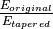

The altimetry.tools.spectrum module contains tools dedicated to spectral analysis.
Spectral analysis of along-track data is a common thing. There are 2 main steps when computing a spectrum:
preprocess the data
It consists in detecting gaps, interpolating over short gaps and rejecting longer gaps, subsampling the data into subsegments of valid data of a given length.
This step is performed using altimetry.tools.spectrum.preprocess()
compute the spectrum
This step is made through a transform of the signal to the spectral domain (eg. FFT). Then frequency, energy and power spectral densities are computed and averaged. It is also possible to use spectral tapers to lower the noise of the spectrum.
This step is performed using altimetry.tools.spectrum.spectral_analysis() (and altimetry.tools.spectrum.get_spec() at lower level)
Tapering and padding are mathematical manipulations sometimes performed on the time series before periodogram analysis to improve the statistical properties of the spectral estimates or to speed up the computations.
altimetry.tools.spectrum.preprocess() allows using tapers through its tapering keyword.
Warning
though it is taken into account in altimetry.tools.spectrum.spectral_analysis(), energy loss caused by the tapering may not be properly resolved.
It may be therefore necessary to correct this loss by multiplying the tapered spectrum by the ratio of energies of both spectra 
AR (auto-regressive methods) can be used to model a spectrum from the signal.
This approach is made possible through the ARspec keyword of altimetry.tools.spectrum.spectral_analysis() (itself calling altimetry.tools.spectrum.yule_walker_regression()).
- altimetry.tools.spectrum.spectral_analysis() : Compute the average spectrum over a set of data
- altimetry.tools.spectrum.preprocess() : Preprocess the data to be admissible to spectral analysis
- altimetry.tools.spectrum.get_slope() : Compute the spectral slope
- altimetry.tools.spectrum.optimal_AR_spectrum() : Get the order of the optimal AR spectrum
Spectral_Analysis : This function performs a spatial spectral analysis with different options on a time series of SLA profiles.
| Parameters: |
|
|---|---|
| Returns: | a spectrum structure {'esd':esd, #Energy Spectral Density
'psd':psd, #Power Spectral Density
'fq':fq, #frequency
'p':p, #wavelength
'params':params} #tapering parameters.
|
| Author : | Renaud DUSSURGET (RD) - LER/PAC, Ifremer |
| Change : | Created by RD, December 2012 |
| Parameters: |
|
|---|
GET_KX :summary: Returns the frequencies to be used with FFT analysis
| Parameters: |
|
|---|---|
| Returns: | Returns * k: frequency * L: length * imx: index of maximum frequency (for separating positive and negative frequencies) |
| Author : | Renaud DUSSURGET (RD) - LER/PAC, Ifremer |
| Change : | Created by RD, July 2012 |
GET_SPEC :summary: Returns the spectrum of a regularly sampled dataset
| Parameters: |
|
|---|---|
| Note : | NaN can not be used. |
| Returns: |
|
| Author : | Renaud DUSSURGET (RD) - LER/PAC, Ifremer |
| Change : | Created by RD, July 2012. Changes * 29/08/2012 : Changed the computation of frequencies and the spectral integration (spectrum is averaged at mid-width frequencies) * 30/11/2012 : Outstanding changes : corrected the spectral integration for computing psd and corrected the normalisation |
Intelligent segmentation of data.
| Parameters: |
|
|---|
GET_SLOPE :summary: This function returns the spectral slope of a spectrum using a least-square regression
| Parameters: |
|
|---|---|
| Returns: |
|
| Author : | Renaud DUSSURGET (RD) - LER/PAC, Ifremer |
| Change : | Created by RD, August 2012 |
Program to solve Yule-Walker equations for AutoRegressive Models
| Author : | XAVI LLORT (llort(at)grahi.upc.edu) |
|---|---|
| Created : | MAY 2007 |
| Changes : | adapted to python by R.Dussurget |
| Parameters: |
|
| Returns: |
|
| Parameters: |
|
|---|---|
| Returns: |
|
Note
To know more about yule-walker and autoregressive methods, see
| Example : | IDL example : #Define an n-element vector of time-series samples
X = [6.63, 6.59, 6.46, 6.49, 6.45, 6.41, 6.38, 6.26, 6.09, 5.99, $
5.92, 5.93, 5.83, 5.82, 5.95, 5.91, 5.81, 5.64, 5.51, 5.31, $
5.36, 5.17, 5.07, 4.97, 5.00, 5.01, 4.85, 4.79, 4.73, 4.76]
#Compute auto_correlation function
acorr=A_CORRELATE(X,INDGEN(30))
#Solve YW equation to get auto-regression coefficients for AR(2) model
YULE_WALKER, acorr, 2, a, sig
#Process auto-regression model
ar=DBLARR(28)
FOR i = 2, 29 DO ar[i-2] = SQRT(a[0]*X[i-1]*X[i] + a[1]*x[i-2]*x[i]+sig*x[i])
#Compute spectrum
spec=spectrogram(TRANSPOSE(X), INDGEN(N), WSIZE=N, OVERLAY=1.0, DISPLAY_IMAGE=0)
#Compute AR(2) model spectrum
ar2=spectrogram(TRANSPOSE(ar), INDGEN(28), WSIZE=28, OVERLAY=1.0, DISPLAY_IMAGE=0)
|
|---|